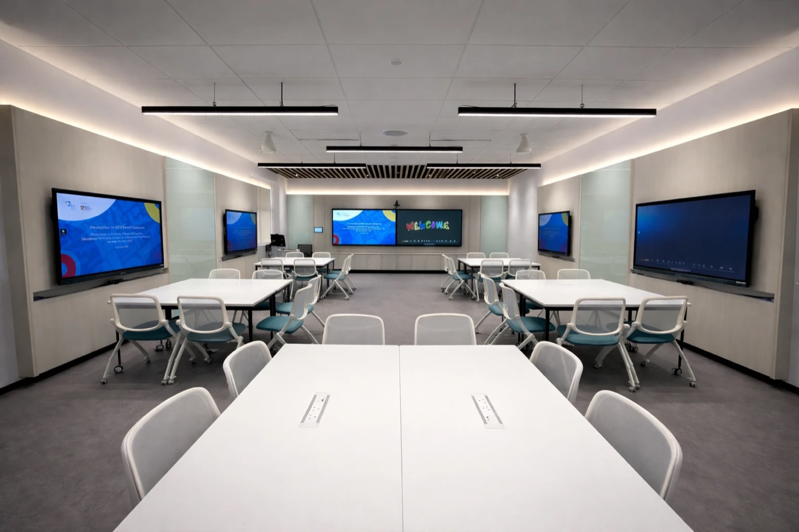

TR 321Smart Classroom walkthrough
01/13Welcome to TR 321
0:00 / 4:00

Virtual walkthrough · Hybrid learning space
TR 321 Smart Classroom
A narrated tour of the room's 360° photo, with close-ups of each feature and a 3D dollhouse model, covering the technology that supports hybrid collaborative learning: real-time co-creation, group workspaces, central room control and AI-assisted audio and video.
- Flexible seating
- Interactive displays
- AI tracking camera
- Ceiling microphone
- Teacher's station
- Control panel
- HD webcams
- Smart blinds
- Ceiling fans
13 chapters4 minNarrated, with captionsReal 360° photo
This device couldn't start 3D graphics. Try a recent version of Chrome, Safari, Edge or Firefox.
Tour complete
You've seen all of TR 321
Look around the room yourself, open each numbered marker to read about it, or watch the tour again.